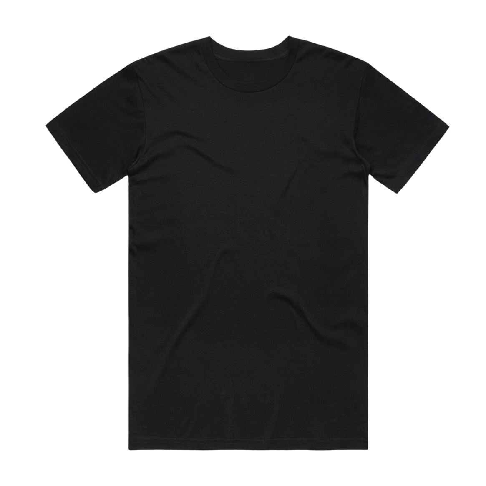

Sorry
Orders are suspended, staff are away from the tools.
We'll be back soon.

Orders are suspended, staff are away from the tools.
We'll be back soon.
TalkingSh*rt is a simple idea.
No graphics, no logos, just a word on your chest.
Talk some sh*rt.
For any custom stuff. Hit me at easysimplecool@gmail.com
Lets talk sh*rt.